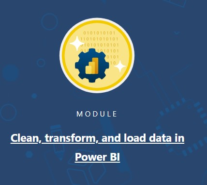
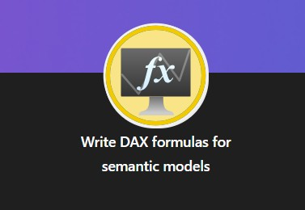
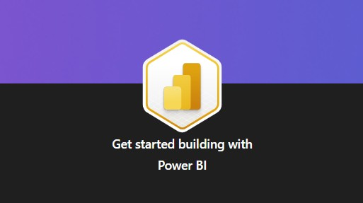

Power BI Insights
Portafolio analítico y certificaciones en Microsoft Power BI
Registro de Insignias

Data Transformation in Power BI
Validación de la capacidad para limpiar, transformar y cargar datos utilizando Power Query. Incluye técnicas avanzadas de pivotado, fusión de consultas y perfilado de datos para asegurar la calidad de la información.

Data Modeling & DAX
Creación de modelos relacionales eficientes (esquemas en estrella y copo de nieve). Dominio de expresiones de análisis de datos (DAX) para el cálculo de métricas complejas e inteligencia de tiempo.

Get started building with Power BI
Fundamentos de Power BI para la creación de informes y visualizaciones. Limpieza y transformacion de datos, modelado de datos y creación de visualizaciones.